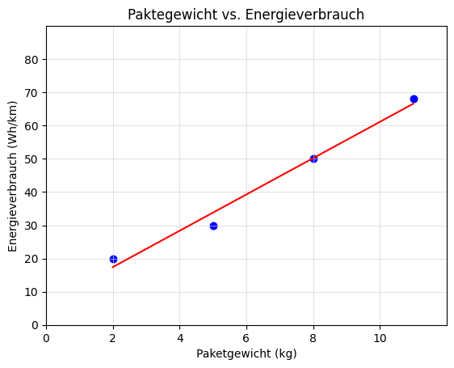

Diese Prüfung deckt die Module A bis D der Zusatzqualifikation „Künstliche Intelligenz" ab.
Diese Übungsprüfung ist struktur-analog zur echten Prüfung aufgebaut.
Hilfsmittel: Taschenrechner Zeit: 60 Minuten
* Erforderlich
Ausgangssituation:
Sie arbeiten bei der LogiDrone GmbH, einem Start-up, das autonome Lieferdrohnen für den Paketversand in ländlichen Gebieten entwickelt. Das Unternehmen möchte die Routenplanung optimieren, Wartungsbedarf der Drohnenakkus vorhersagen und Hindernisse (Vögel, Stromleitungen) automatisch erkennen.
Persönliche Daten
Modul A - Grundbegriffe und Einordnung
1. Die LogiDrone GmbH nutzt ein System, das basierend auf GPS-Daten und fest programmierten Regeln ("Wenn Windgeschwindigkeit > 50km/h, dann Landen") entscheidet, ob eine Drohne starten darf. Handelt es sich hierbei um eine KI im modernen Sinne (Maschinelles Lernen)? Begründen Sie kurz. *
2. Welche der folgenden Technologien im Umfeld von LogiDrone lassen sich als "Maschinelles Lernen" klassifizieren? (Wählen Sie alle zutreffenden Antworten aus) *
3. Klassifikation oder Regression? Ordnen Sie die Anwendungsfälle zu. *
Anwendungsfall
Klassifikation
Regression
Fall A: Vorhersage der genauen Flugzeit in Minuten basierend auf Paketgewicht und Wind.
Fall B: Entscheidung, ob ein aufgenommenes Bild ein "Hindernis" oder "Freier Weg" zeigt.
Modul B - Datenmanagement & Sicherheit
4. Für das Training der Hinderniserkennung werden Kameras verwendet, die auch Gärten von Privatpersonen überfliegen. Der Datenschutzbeauftragte fordert Maßnahmen (DSGVO). Nennen Sie eine konkrete technische Maßnahme bei der Datenaufbereitung (Preprocessing), um den Datenschutz zu wahren, bevor die Daten gespeichert werden. *
5. Sie teilen Ihre gesammelten Flugdaten in Trainingsdaten (80%) und Testdaten (20%). Ein Kollege fragt, warum man nicht 100% der Daten zum Trainieren nutzt, damit die KI "mehr weiß". Was ist das Hauptargument für die Testdaten? *
6. In den Sensordaten der Drohnen fehlen bei einigen Flügen die Werte für die "Außentemperatur" (NaN - Not a Number). Nennen Sie zwei gängige Strategien im "Data Cleaning", wie Sie mit diesen fehlenden Werten umgehen können, damit der ML-Algorithmus nicht abstürzt. *
Modul C - Algorithmen & Mathe
7. Analyse: Lineare Regression
Es wurde der Zusammenhang zwischen Paketgewicht (x in kg) und Energieverbrauch (y in Wh/km) untersucht.

a) Beschreiben Sie die Korrelation zwischen Gewicht und Verbrauch (positiv/negativ, stark/schwach). *
b) Berechnen Sie die Steigung (m) der Regressionsgeraden, die durch die Punkte P1(2|20) und P2(8|50) verläuft. *
8. Entscheidungsbaum (Decision Tree)
LogiDrone nutzt einen Entscheidungsbaum, um zu prüfen, ob eine Drohne Startbereit ist.
9. Nach welchem Prinzip ("Mathematische Reinheit") wählt der Decision-Tree-Algorithmus aus, welches Merkmal (z.B. Akku oder Wind) an der Wurzel steht? *
Modul D - Evaluation & Ethik
10. Das KI-Modell zur Erkennung von "Defekten Propellern" wurde getestet.
Es wurden 100 Drohnen geprüft:
Real Defekt: 10 Drohnen.
Davon hat die KI 8 korrekt als "Defekt" erkannt (TP = 8).
2 defekte Drohnen wurden fälschlicherweise als "Heil" eingestuft (FN = 2).
Die KI hat zudem 5 heile Drohnen fälschlicherweise als "Defekt" markiert (FP = 5).
Berechnen Sie den F1-Score.
Hinweis: Der F1-Score ist das harmonische Mittel aus Precision und Recall.
Nutzen Sie die Formel: F1 = 2 * (Precision * Recall) / (Precision + Recall)
(Tipp: Berechnen Sie zuerst Precision und Recall separat).
11. Warum ist in diesem Szenario (Sicherheitsrelevanter Propeller-Defekt) ein hoher Recall wichtiger als eine hohe Precision? *
12. Data Bias: Die KI für die autonome Landung wurde ausschließlich mit Daten aus ländlichen Gebieten (Wiesen, Äcker) trainiert. Nun wird die Drohne in einem Vorort mit vielen gepflasterten Einfahrten eingesetzt und die Landungen schlagen oft fehl.
Welches Problem liegt vor? (Wählen Sie alle zutreffenden Antworten) *